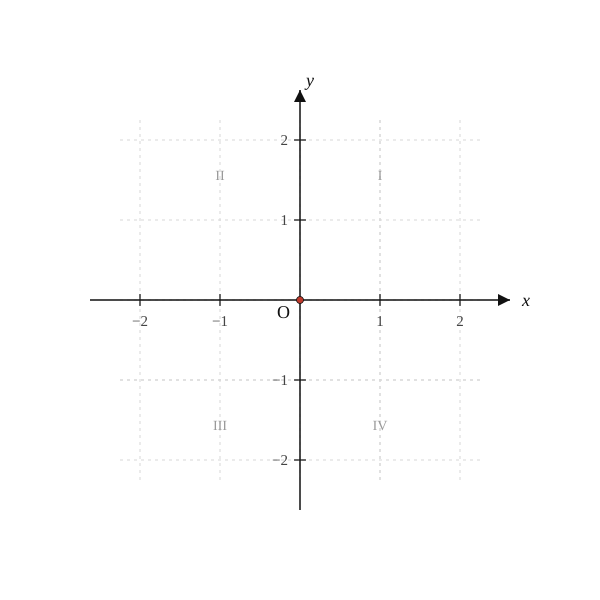
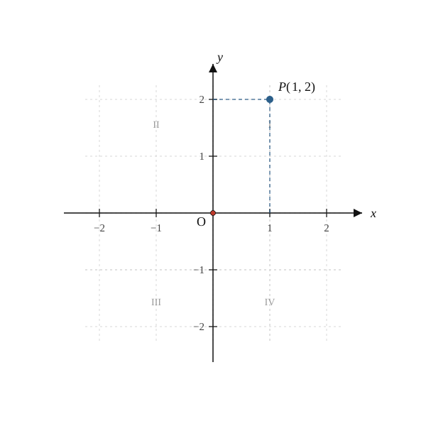

平面直角坐标系

平面直角坐标系
如图，平面直角坐标系由两个垂直的数轴组成，分别称为轴和轴。
象限
平面直角坐标系将平面分为四个象限，分别称为第一象限、第二象限、第三象限和第四象限，图中已标注。
点的表示
点的坐标表示为，其中和分别是点在轴和轴上的坐标，如图，蓝色点的坐标为。

NOTE 03

如图，平面直角坐标系由两个垂直的数轴组成，分别称为轴和轴。
平面直角坐标系将平面分为四个象限，分别称为第一象限、第二象限、第三象限和第四象限，图中已标注。
点的坐标表示为，其中和分别是点在轴和轴上的坐标，如图，蓝色点的坐标为。
